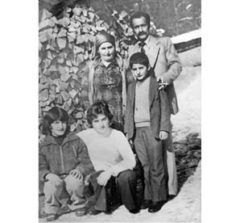
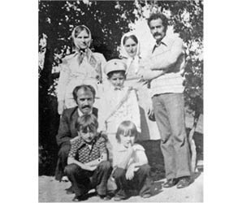

“Babam Veliköy’de Gözaltına Alındı, 40 Gün Sonra Ölüsü Teslim Edildi.”
Tamer Aksakal22
12 Eylül döneminde babam Cengiz Aksakal TÖB-DER üyesi bir öğretmendi. Artvin Şavşat’a bağlı Veliköy’de gözaltına alınmıştı. Yaklaşık 30-40 gün sonra 12 Kasım 1981’de, 40 yaşında ölü olarak bize teslim edildi.
Darbeden Önceki Hayat
Babam çok farklı bir insandı. Artvin Veliköy doğumluydu. Annem Teren’le Veliköy’de yaşıyordu. Bizim ev bağrış çağrışın olmadığı bir evdi. Büyük ablam çocukken, bir yılan ısırmasından dolayı ayağından ameliyat geçirmişti. Evdeki en büyük üzüntümüz oydu. Babam hep çocuklarının önünü açan, anneme okuma yazma öğretmek için çok çabalayan bir insandı. Aksakallar diye bir sülaleyiz biz, 1969’da ilk kot pantolonu giyen amcamın kızıdır. Köydeki insanların “kız pantolon giyer mi” dediği bir zamanda köydeki birçok ilki başlatan bir aileyiz. 1979’a kadar iç içe, son derece mutlu, huzurlu bir yaşam süren bir aileydik. 1979’da Ünye’de amcam Remzi Aksakal’ı vurdular, orada başladı bir fırtına.

Cengiz Aksakal (ayakta sağda) eşi ve çocuklarıyla
Ben bir kere çok yaramaz bir çocuktum. Okuldaki bir olaya karıştım ve Pınarlı’daki ortaokula sürüldüm. 3 aylığına oradaki okula gittim. Büyük ablam Artvin’de okuyordu. Kız kardeşim de bizim köyde, ortaokulda okuyordu. Köylü yaşamı gibi bir yaşamımız vardı. Babam öğretmen olmasına rağmen biz kendi odunumuzu kendimiz hazırlardık. Ot biçme zamanı babamla giderdik, ot kaldırırdık. Yani şu çok güzeldi: köyde bir imece yaşam vardı. O dönem babam da çok sevilen bir insandı. Onun büyük etkisi vardı. Babamın çay biçmeye yalnız gittiğini ama 2 saat sonra geldiğini bilirim. İnsanlar yardım etti, bitti diye geri gelirdi. Babam çok da sabırlı bir insandı, belki en çok da bana karşı. Biraz da iki kız kardeşin arkasından gelen küçük çocuk olarak, bir toleransım da vardı. Onu da çok iyi kullanırdım.
Toplantı Yapıyorlar, Babamı Alıyorlar
Babam alındığında ben 12 yaşındaydım. Biz 3 kardeşiz. O anı çok iyi hatırlıyorum. Aslında babamı gözaltına almadılar. O gün yüzbaşının geldiğini, Veliköy’deki öğretmenlerle toplantı yapacağını köyün bekçisi babama söylemiş. Babam da anneme “Takım elbisemi getir, toplantıya gideyim öğretmen görsünler, ne söyleyecekler bakalım” gibilerinden bir espriyle haber etmiş. Karakola giderken anneme, Sıhhiya diye bir köy var, oranın muhtarıyla Meydancık’ta bir öğretmenin ismini veriyor, eğer diyor bunları da gözaltına alırlarsa korkun. Annem bunu babam öldükten sonra bizimle paylaştı. Babam öyle bir şey söylemesine rağmen onları da çağırmadılar, çok enteresan bir şey. Babamlar o gün gittiler. Hatta kurbanımız da vardı. Çünkü Kurban Bayramı o toplantıya gittikten, yanılmıyorsam, 1-2 gün sonraydı. Akşam annemler toplandılar. Niye bırakmıyorsunuz diye sordular. Çünkü bütün öğretmenleri o gün toplantıya çağırdılar ve gözaltına aldılar. Sonradan, babamı gözaltına almak için, herhangi birisi kaçmasın diye taktik uyguladıklarını kendi aramızda konuştuk. Kurban Bayramı’na bırakırlar diye düşünüyorduk ama bırakmadılar. Hatta annemler karakola yürümek istediler, daha yanlış anlaşılacağını söylediler, annemler de vazgeçti ondan. Bir hafta Veliköy’de gözaltında tuttular. Babamı bize göstermediler.
Günde belki 20-30 Reo’nun23 çıktığı, bir de uzak bir köy olduğu için sürekli baskı altında tutulan bir yerdi Veliköy. Okulda bir sahamız vardı. Orada bile top oynamaya müdahale ediyorlardı. Bazen yaşlı insanlara eziyet ettiklerini görebiliyorduk. Yere yatırıyordu askerler, yaşlı insanların üstüne çıkıyorlardı. Daha sonra bir gece annem dedi ki: bu Reoların köye gelmesi normal değil. Sabaha doğru babamlar Şavşat’a götürüldüler. Şavşat’ta poşalardan24 biri, Astsubay Ökkeş aracılığıyla para toplayarak içeridekileri bırakacaklarını söyledi. Fakat baktık ki öyle bir şey gerçekleşmeyecek, yani kimsenin babamı oradan çıkarma şansı olmayacak...
Şavşat’ta amcamı, babamın büyük ağabeyisiyle, amcasının çocuğunu bıraktılar. Biz o zaman anladık olayın vahametini, içeridekilerin farklı bir muamele gördüklerini. Amcam çıktığı zaman, Artvin’de babanızı da bırakacaklar gibi bir düşüncesi vardı. Daha sonra teyzemin eşini, amcamın çocuğunu, babamın birkaç öğrencisini daha gözaltına aldılar. O arada köyde, dağa gerilla olarak çıkmış arkadaşlardan birisi yakalandı. Onun arkasından Şavşat bölgesindeki operasyonlar biraz daha hızlandı. İşte tam bu dönemde, bizim köy çıkışında bir askeri arabaya ateş açıldı ve çatışma çıktı. Her iki tarafta bir kayıp olmadı ama ondan sonra içerideki baskı artmış, babamlara karşı tavır değişmiş. Ben bu olanları çok iyi hatırlıyorum. 12 yaşında olduğum için içeri girmedim ama içeriden çıkan insanların anlatımıyla babamın Şavşat’ta çok rahat olduğunu, endişesinin olmadığını “Bize ne yapabilirler, bizim suçumuz yok, günahımız yok. Artvin’e götürseler de biz, birinci sorgudan sonra çıkarız” dediğini biliyoruz.
En büyük çaresizlik, elinizden bir şey gelmemesi ama etrafınızdakilere de bir şey diyemiyorsunuz. Çünkü onlar da aynı durumda. Köyün geneline bakıyorsunuz o dönem belki %80’i aynı. Hepsi baskı altında. Ama en kötü şey şu: ulaşamamak. Yani aynı köyde duruyorsunuz babanız karakolda duruyor, siz evde duruyorsunuz. Belki aranızda 100 metre var ama hiçbir şey yapamıyorsunuz. Sadece sizin yapıp yapmamanıza da bağlı değil. Birçok insan bir şey yapamıyor. Kimseye göstermiyorlar. O da ailedeki direnci kırıyor. Şavşat’tayken herhangi bir işkenceye maruz kalmamışlardı. Hatta kazak da verebilmiştik, üstlerinde kalın bir şeyler olsun diye.
O esnada suçlandığı bir şey yok. Babam Halkevi başkanlığı ve kooperatif başkanlığı yaptı. Veliköy Kooperatifi vardı, o çok iyi konumdaydı. Çok iyi hatırlıyorum, şimdi bile insanlar onu söylüyor, “Hoca yaşıyor olsaydı burası bir holding kadar büyürdü!” diyorlar. Gerçekten de Trabzon’dan her ay malzeme getiriyordu. Tam o sene de yeni bir şeye başlayacaklardı, köyden ürün alalım, bunu değerlendirelim, karşı tarafa satalım. Onun karşılığında biz de başka şeyleri getirelim. Bu halk her şeyi ucuz yesin gibisinden.
Daha sonra babam, Artvin’deki birinci sorgudan çıkıyor. O dönem aldıkları insanları önce karakolda, daha sonra Şavşat’ta, daha sonra da Artvin’e Bölge Öğretmen Okulu olarak yapılan binaya götürdüler. Birçok insana orada işkence yaptılar. Babam da oraya götürüldü. Şimdi, babam birinci sorgudan çıkınca öğrencisine: oğlum tamam bitti, bizi bırakırlar diyor, çocuklar da korkmasın diye. Babam o dönem 40 yaşında, öğrencileri de 17 yaşında, 20 yaşında gençler, daha önceden mezun ettiği çocuklar. Teyzemin kocası da orada. Ona diyor ki “Kenan, bu iş artık bitti. Biz yakında çıkarız.” Ondan sonra bir vatandaş geliyor. Aradan 33 sene geçti, 33 seneden beri tespit edemedik biz aile olarak o vatandaşın kim olduğunu. “Öğretmen Cengiz Aksakal kimdir?” diyor. Benim diyor. Babamın gidişi o gidiş. Yani o gidişiyle babamın hastaneye yatışı arasında 2 gün var. Şimdi, o gün gören öğrencisi, amcamın çocuğu, yine bizim yakın bir komşumuz, babamın, karakolda aç kalmaktan, sorguda darp edilmeden doğan bir yorgunluk dışında son derece sağlıklı olduğunu söylüyorlar. O kadar. Babam gözaltına alınmadan önce, çok iyi hatırlıyorum, 79 kiloydu ve çok sağlıklı bir insandı. Biz, öyle sanıyorum ki 49-50 kg. civarında teslim aldık. Korkunç bir şeydi. Artvin’de sadece babam değil, işte Ensar ağabeyi (Karahan) ve Enver Karagöz gibi birçok insan da ağır işkencelerden geçti.
Zaten darbe döneminde aileden içeri alınmayan çok az kişi kalmıştı. 2 kuzenim, babam, daha sonra amcam içeri alındı. Kimileri 5 sene sonra, kimileri 3 sene sonra, kimileri ise 15 gün sonra bırakıldı.
Öyle Bir Rapor Vereceğim ki
Babamı, Öğretmen Okulu’ndan Artvin Devlet Hastanesi’ne kaldırıyorlar. Anneme haber geldi. Ben Şavşat Lisesi 1. sınıftaydım. Sen gelme, ben gideceğim dedi. Annem gitti amcamla beraber. Artvin Devlet Hastanesi’nde alt katta, bir kenarda, herhangi bir müdahale edilmemiş halde bulmuş. Vasıf Atabey diye bir doktor var. O birinci raporunda menenjit hastalığından bu hale geldiğini yazmış. Daha sonra iş durumu yoğunlaşınca Artvin Devlet Hastanesi’nden Trabzon Devlet Hastanesi’ne sevk ettiler. Annem de, amcam da gitti. Amcam 3 sene önce öldü, babamdan 30 sene sonra rahmetli oldu. Hep içimde kaldı. Dediği şey şuydu: zaten çocuğu öldürmüşsünüz yine başına silah tutuyorsunuz. Biz bunları hep annemin konuştuğu biçimiyle biliyoruz. Oradaki doktor annemi çağırıyor, diyor ki: Hiç merak etmeyin, biz elimizden gelen ne varsa onu yapacağız yaşatmak için. Ha, elimizden bir şey gelmezse de ben, inanın ki, Trabzon’da bir uçakla temas halindeyim, en ufak bir şey olursa Ankara’ya Hacettepe’ye sevk edeceğim. Annem sürekli onu anlatıyor. Sonra, 2 gün kaldı Trabzon Devlet Hastanesi’nde, sabah annemi çağırıyor ve babamın sabaha doğru öldüğünü haber veriyorlar. Annemi kaldırıyorlar yanından. Doktor, anneme bir baba şefkatiyle, “Sakın ağlama, ortalığı velveleye verme, ben öyle bir rapor yazacağım ki o raporu hiçbir güç bozamayacak” diyor. Hakikaten de bozulmadı. O rapor sayesinde biz, hem Türkiye’de hem de Avrupa İnsan Hakları Mahkemesi’ndeki (AİHM) davayı, sadece o raporu bozamadıkları için kazandık.
Doktoru tanımıyoruz. Tunceli’de yeğenini vuruyorlar 1980’de. Tesadüfi bir şekilde kendisi annemlerin gittiği gün göreve başlamış. Yeğenini defnediyor, 3-5 gün izinli kalıyor ve geri dönüyor. Babamın Trabzon’a götürüldüğü gün göreve başlıyor. Daha sonra pek çok insanla iletişim kurmaya çalıştık doktoru bulmak için ama bulamadık. Çünkü annem de yaşlı bir insandı diyor. Yani yaşıyor mu yaşamıyor mu onu bile tespit edemedik.
Babamın Öldüğünü Öğreniyorum
Şavşat’ta Arkadaş Kitabevi var, bir arkadaşın tanıdıkların yeriydi. Ben de oradayım, telefon çaldı, tesadüfen telefonu açtım. Telefonu açtığım zaman bir ses sadece, “Veliköylü öğretmen öldü, cenazesi bugün yola çıkacak, mezar yerini eşi biliyor. Bir haber verir misiniz?” diyor. Allah allah, Veliköylü öğretmen babamdan başka birisi değil... Yaşadığım en büyük şoklardan birisidir. Sonra o gece sabaha doğru getirdiler, kız kardeşimle beraber Şavşat’taydık. Oradan bir minibüs, Fahamettin ağabeyinin annesi de Şavşat’ta, onlarla beraber minibüsle köye gittik. Askerler yol boyunca belki de 40 kere aramışlardır insanları. Cenazeyi getirirken bile rahat vermemişlerdi. İnsanlar cenazeyi yıkadıktan sonra yakın birisine su döktürürlermiş. Ben bilmiyordum. Geldiklerinde sabah, su döktürdüler bana. Ben şimdi 45 yaşındayım, o anla çok yaşadım. Ağzındaki dişlerinin geriye dönmüş olması, bileklerinin kemiklere kadar inmiş olması... Zaten kollarında et gibi bir şey de kalmamıştı. 79 kilodan 49 kiloya inmiş. Şimdi düşün öyle bir şey, damak komple geriye dönmüştü, dişleri... Muhtemelen kaba işkence ile botla vurursanız belki, dipçikle vurursanız öyle bir şey olur. Ama dudağında patlama falan yoktu. Ayak parmaklarında iz vardı, diz altında korkunç yaralar vardı. Karın bölgesinde yaralar ve darp izleri vardı.
Tabii o sabah Veliköy’ün bütün girişlerini tutarak cenazeye katılmak isteyenleri gözaltına aldılar cenazeye katılmasınlar diye. Onu da engellediler. Köyden katılabilen çok az insanla kaldırdık cenazeyi. En büyük acı da odur zaten.

Cengiz Aksakal ve ailesi (ayakta sağ başta)
İnsanlar Bizden Uzaklaşıyor
İnsanlar içeri girip çıkabilir, burada bir sorun yok ama babam öldükten sonra benim çocuk olarak yüzleştiğim şey şuydu: ya, en yakınlarınız, en önce terk ediyor sizi. Nasıl diyeyim, cüzamlı bir hasta gibi “Aman, işte dokunursam acaba ben de gider miyim?” duygusuyla. İşte o çok kötüydü. Kızmadım. Ben nasıl babama karşı özlem duyuyorsam o insanlar da belki çocuğundan, annesinden, babasından kopmamak için o tavrı sergilemiş olabilir. Akrabalarım yapılması gerekeni yaptılar. Onların da onun ötesinde bir şey yapma şansları yoktu. Mesela köyde top oynadığın arkadaşın senden uzaklaşıyor. İşte bakkala gidiyorsun bakkal paran varsa sana bir şey satmaya çalışıyor. Paran yoksa... Allah allah ben o bakkala girer her şeyi alır çıkardım. Yani işte onları böyle genellediğiniz zaman köydeki insanların size bakışı değişiyor. Biraz daha büyüyüp kendi çocuklarım olduktan sonra onu da kendi kendime özümsedim, ben de şimdi diyorum ki, aslında orada şu yapılması lazımmış: zaten böyle bir şey yaşanmış, insanların oraya el uzatması, el üstünde tutması lazımmış.
İşkence yapılır, birileri ölür ama şuna inanın ki ölenden çok, eşi ve çocukları ölür. Çünkü en çok sevdikleriniz sizi terk etmeye başlar yavaş yavaş. İşte hep yanınızda olan arkadaşlarınız terk etmeye başlar, onların aileleri terk etmeye başlar. Ama ne zamana kadar bu böyle: ben o zaman 12 yaşındaydım, bir öğretmen çocuğuydum. Biz İstanbul’a geldik, ilk 7 seneyi saymıyorum, ondan sonra ekonomik durumumuz düzeldikten sonra insanların bize karşı tavırlarının da değiştiğini gördük. Ben o zaman anladım ki, insanlar bazen çıkarcı da yaklaşıyor, daha da güçsüzleşiyor. Senin karşında, o zaman selam vermeye çekinen, bize de bir zararı olur mu diyen insanların; siz belli bir güç olduktan sonra boğazınıza sarıldığını, size sanki çok değer veriyormuş gibi davrandığını görüyorsunuz. Ben kendi çocuklarıma da onu söylüyorum, önce kendi içinizde birbirinizle sonra dışarıdan dayınızın çocuğuyla, halanızın çocuğuyla bir dayanışma kuracaksınız. Dayanışma kuruyorsanız, dışarıdaki toplumla da bir dayanışma kuracaksınız. Birbirinize yetmezsiniz çünkü. Ama işte biz, o dönem öyle olamadık. Öyle olamadık derken, şimdi suçlamak da istemem ama en çok ezildiğim şeylerden birisidir o. Hem babanız ölüyor hem çok fazla insan sizi yavaş yavaş terk ediyor. O da sıkıntılı bir şey.
Ben lisede okulu bırakmak zorunda kaldım. Şavşat’ta okudum, Mustafa Eken diye bir yüzbaşı vardı, dersimize geliyordu. 15 günde bir odasına çağırıyordu. İşte sen de baban gibi olursun, sen de baban gibi gidersin... Babanız öğretmen aynı okulda, gerçi babam o zaman 5’e kadar okutuyor ama o okulda neticede. Babam gittikten sonra her şey %100 değişiyor. İşte zor olan da o: Bakkal değişiyor, okuldaki öğretmeniniz değişiyor, yahut işte dayınız, amcanız değişiyor. Hatta belki onlar değişmedi ama psikolojik olarak siz değişiyorsunuz. Hani gemiyi en son fareler terk eder ya! İşte siz fareler gibi gemide kalıyorsunuz, eğer terk etme şansınız olursa terk edebilirsiniz. Yoksa gemiyle beraber batacaksınız. Öyle bir konuma getiriyor ama bunu o köydekiler mi getiriyor yoksa hakikaten sistem mi öyle işliyor ona karar veremiyorum. Şu anda içimdeki keşkelerden birisidir, keşke okusaydım. Şimdi çocuklarımda onu yaşatmak istiyorum. Evimi de satarım, arabamı da satarım okusunlar hayatlarını kurtarsınlar. Biz bir kere öyle başladık öyle de gidiyor. Okumamış olabiliriz ama...
Öyle zannediyorum ki halen devam ediyor bu fırtınalar. Bundan 2 sene evveline kadar Veliköy’de karakola gittiğimde bir astsubay sizi görmek istiyor denirdi. Ancak şu son 2 seneden bu yana o baskılar dağıldı.
Babamın Ardından
Babam 1980’de öldüğü zaman çok aşırı sağcı bir ailenin şunu dediğini çok iyi biliyorum: Bu köyün yarısından çoğunun ölmesi lazımdı, bu adamın değil. Hakikaten sağcılardan birisi dövülürdü, adam babamdan 8-10 yaş büyük, babama gelir, rica eder hocam bunu bir tatlıya bağlayalım diye. Babamdan bir 20 yaş küçüğü gelir, ya Cengiz enişte bir baksana şöyle bir şey var. Çocuk olmama rağmen bazen hep kendi kendime onu sorardım, acaba babamdaki bu şey nedir diye.
Babam çok politik miydi, bence bugünün penceresinden baktığın zaman çok politik değildi ama çok aktifti. Halkevi’nde başkanlık yapıyordu, kooperatifin başkanlığını yapıyordu. Babam çok politikti de o yüzden mi böyle bir şeyi hak etti? Çok da politikti diyemem, normal bir köy öğretmeni, çok iyi bir köy öğretmeni olabilir kendi köyünde çok sevilen. Babam köyde elini kaldırdığı zaman köyün belki %99’unun elini kaldırabileceği kadar da örgütçü. O da şundan kaynaklanıyor, herhalde söylediklerinin hepsini yapmış, hem de bu köyde doğmuş bu köyde büyümüş, insanlar da demek ki verdiği söze itibar ediyor. Hoca diyorsa doğrudur, Cengiz diyorsa doğrudur, Cengiz Emmi diyorsa doğrudur. Örgütçülük yönünün çok yüksek olduğunu düşünüyorum.
İstanbul’a Göçüyoruz
Babam öğretmendi. Eve maddi olarak bakan babamdı. Son 4 senesini çalışıyordu. Babam öldükten sonra malulen emekli ettiler. Anneme cüzi bir miktarda maaş bağlandı. Babamın normalde 5.000 lira alması gerekiyorken annem 2.000 lira alıyor 3 ayda bir.
Babam öldükten sonra Şavşat’ta kaldığımız her akşam baskı gördük. Babam ölmüş. Her akşam adam geliyor, aynı asker, aynı astsubay aramaya başlıyor. Ya kardeşim dün aradınız, bu akşam neden geldiniz? Adam kafayı çekiyor, geliyor, aramak istiyordu. Mesela yoğurt mayalamış annem, ayağını sokuyor. Büyük ablam 18 yaşında, büyük ablamı karakola götürüyor, sabah bırakıyor. Bu sefer, 12 yaşında olsan da bir erkeklik durumu, tavrı başlıyor. Astsubay geldiği zaman küfür etmeye başladım. Annem ya da amcam gördüler ki, bu reaksiyonlar çok iyi değil. Daha sonra kız kardeşlerim İstanbul’a geldi 1983 yılında. O yılın sonuna doğru da ben geldim. Ondan sonra Yenibosna’da bir ev tuttuk. Annemiz de bir sene sonra yanımıza geldi. Bir dönem var, bir dönem yok yaşadık.
1983’te Yenibosna’da bir ev tuttuğumuzda Sadiye Teyzemiz vardı. O hep şunu soruyordu: Eşyanız ne zaman gelecek? E tabii bizde eşya yok. Bir gün perdenin bir kanadını alıyoruz, aradan 15 gün geçiyor başka bir kanadını ablamlar alıyor. Başka zaman işte bir küçük masa, ondan bir tüp, diğerinden bir kırık ranza işte bilmem ne... Sonunda Sadiye Teyze de anladı ki, bunların eşya meşya getireceği yok. Sağ olsun o dönem yakında olan komşular, akrabalar kullanmadıkları eşyaları verdiler.
Biz İstanbul’da da çok zorluk yaşadık ancak 1990’lı yıllarda belli bir mesafe katettik. Ama o 1983 ile 1991 yılları arasında Yenibosna’da otururken mesela yan tarafta tavuk pişirdiler, tavuk ızgara yaptılar, biz pencereleri kapattık o koku gelmesin diye. Burada da çok yoksulluk çektik. Şu anda herkes İstanbul’da yaşıyor. Annem de 73 yaşında. 33 senedir yalnız, bizimle beraber. Bir sıkıntısı yok.
Hürriyet gazetesi ile bir röportaj yapmıştım. O zaman patronum çağırdı beni, oğlum bizimle daha önce niye paylaşmadın dedi. Patronun kardeşinin de Çapa’da 1970 olaylarında ilk vurulan çocuklardan birisi olduğunu öğrendim. Yani onun dışında aileye karşı bir tepki olmadı.
Babamın İşkencecileri Beni Buluyor
Bundan 10 yıl önce bir mağazada çalışıyordum. İçeri 2 kişi girdi, biri “Merhaba, Tamer Aksakal sen misin?” diye sordu. Benim dedim. “Ben Mecdi Cengiz, bu da Ferit Ildırar.” Ben kendimi tutamadım tabii ki, küfürlü birkaç şey söyledim. Babama işkence eden kişilerdi onlar. Şu anki genel müdürüm de oradaydı, oğlum ne oldu dedi. Babamın işkencecileri bunlar deyince arkadaşım şöyle bir şey söyledi adamlara: “Bak, o dönem çok farklı bir şeyiniz vardı, rütbeniz vardı, dokunulmazlığınız vardı. Derhal burayı terk edin. Eğer bir daha bu çocuğun etrafında görünürseniz sizi hemen gözaltına aldırtırım. Hiç tereddüdünüz olmasın!” Onlarsa şöyle bir şey dediler: “Biz sizinle oturup konuşmak istiyoruz. Bunu biz yapmadık.” Radikal gazetesinde yazan Şavşatlı, Adnan Keskin’i aradık. Bize üstünde teyp olan bir arkadaş verdi. Kız kardeşlerimin ikisi, damatlardan biri ve ben gittik konuştuk. “Cengiz Aksakal olayının faili biz değiliz, biz böyle bir şey yapmadık. Benim üsteğmenim o dönem dağdaydı, ben de o dönem izindeydim” diye devam ettiler. Tamam sen izindeydin de zaten mahkeme sana izin kâğıdındaki sahtecilikten ceza verdi. İzin kâğıdı var ama üzerinde tahrifat yapılarak var. Mahkeme de onu diyor zaten. Tamam sen izinde olduğunu söylüyorsun ama o dönem sen izinde değildin, buradaydın. Çok enteresandı, mesela Ensar ağabeyinin ölümünü doğru anlattılar. Hiç katkısız, nasıl öldürüldüğünü anlattılar. Ben onu Fahamettin ağabey ile konuştuğum zaman doğrudur dedi. Hiç katkısız anlatmışlar. Çünkü o dönem Emin enişte de Trabzon’dan getiriliyor, Fahamettin ağabeylerle Ensarlar da Şavşat’tan getiriliyor. Ferit Ildıran da diyor ki: 1000 kişilik asker varsa hepsi saldırdı. Yani o arada gitti diyor Ensar. Kaba işkencede götürdüler Ensar ağabeyi. Bizimle görüştükten sonra da mahkemeye yeni delil bulduk, aile bizden davacı olmuyor diye gittiler. Biz davacı olduğumuzu söyledik ama tabii ne oldu, mahkeme 4 sene 3 ay ceza verdi, iyi hallerinden 2 sene 6 ay verdi. Bu kısa dönem içerisinde 6 ay biri yatmış, 9 ay da biri yatmış. Yani infazın gerçekleştiğini söylediler ama bize verilen öyle bir şey yok. Bunlar gözaltına alınmıştır, infaz yapılmıştır diye bir belge yok.
Adamlarla ilk reaksiyonum siz yaptınız bu işi, sizsiniz bunun faili idi. Birisi dedi ki, “Benim çocuğuma işkenceci babanın çocuğu demesinler.” Ben de dedim ki, “Bunu yaparken düşünecektin. Ben de işkencede öldürülen bir babanın çocuğuyum. Yani bunu sen yaptıysan bunun sorumluluğunu da sen çekeceksin. Bunun kaçışı yok.” Babana işkenceyi biz yapmadık, özel bir tim geldi o yaptı diyorlar. Tamam isimlerini verin, biz sizin adınıza bu davadan vazgeçelim diyoruz. İsim de vermiyor, yani öyle bir şey yok aslında. Adamlar davayı biraz daha uzatıp düşürmeye çalıştılar. O da olmadı. Süreç de böyle tamamlandı.
Bizim dava açış şeklimiz belli. Ferit Ildırar’dan davacı mıyım ben, değilim. Mecdi Cengiz’den davacı mıyım, değilim. Ben devletten davacıyım, ben devleti mahkemeye veriyorum. Diyorum ki: sen öğretmen Cengiz Aksakal’ı şu gün şu saatte toplantı yapacağım diyerek aldın, doğru mudur kardeşim, doğrudur. Şu saatte şu hastaneye yatırdın, bu adam Trabzon Devlet Hastanesi’nde öldü. Bunu ben söylemiyorum, 11 kişilik heyetin 10 kişisi, evet işkence yapılmıştır raporu vermiş. Ben devletten davacı oluyorum. Devlet de sizin ikinizi çıkarıyor. Diyor ki, siz ikiniz yaptınız bunu. Adam biz yapmadık ama siz böyle düşünüyorsanız yapacak da bir şey yok dedi ve o şekilde ayrıldık. Adamlar çok rahat. Ferit Ildırar denen adam, “Ben ondan sonra Güneydoğu’ya gittim 500 tane PKK’li öldürdüm” diyebilecek kadar rahat. Diyor ki ben bunu ne için yaptım, devletim için yaptım. Ben orada bir şey söyledim, bu devlet senin mi, sen misin devlet? Sen vatandaşsın, ben de vatandaşım. “Ama ben üniforma giyiyorum.” Üniforma giyiyorum diye sen insanları öldürme hakkına sahip misin? Yani işte bunlara dokunulamaz, bunlara bir şey yapılamaz şu edilemez bu edilemez diye düşünüyor. Şimdi bakıyorum, biraz da iyi oluyor generaller içeri gittikçe. Onlara dokunulması da güzel yani. Dokunulur, herkese dokunulur.
Ben o dönem de aynı şeyi söyledim, şimdi de aynı şeyi söylüyorum: hiç hırsla ve öfkeyle bakmadım. Tamam böyle bir şey yaşandı ama işte bunun karşılığında da şöyle intikam alınsın diye bakmadım. Belki annemin serzenişi olur, işte beddua eder bilmem ne yapar ama onu da doğru bulmuyorum. Çünkü herkes yaptıklarını bir gün çeker. Ben öyle diyorum, öyle bakıyorum olaya.
Dava Süreci
Dava 30 sene sürdü. 11 Eylül 2007’de karara bağlandı.
Dava sürecini takip eden annem ve geçen sene kaybettiğim amcam. Amcam anneme bir dava açtırtırıyor. 1980 yılının Kasım 12’sinde babam ölüyor, Kasım’ın 30’u gibi de dava açılıyor. Annem beni hep olayın dışında tuttu. İçgüdüsel olarak çocuk oralarda deşifre olur, ismi duyulmasın şu olmasın bu olmasın diye davayı daha çok annem –okuma yazma bilmemesine rağmen– yürüttü. Gerekiyorsa yanına birisini aldı götürdü veya şahitler istiyorlarsa, şahitleri götürdü. Önce Artvin’de başladı dava. Daha sonra denildi ki; devlet memurları görev yaptıkları ilde yargılanamazlar, onun için Erzurum’a aldılar mahkemeyi. Erzurum’daki mahkeme 6 yıl ceza verdi. Yargıtay bozdu. Bu sefer Ardahan tekrar Artvin’e gönderdi davayı.
Ardahan Ağır Ceza çok enteresan bir şey yaptı: bütün polisleri beraat ettirdi. Bu sefer yalnızca Ferit Ildırar denilen üsteğmen ile jandarma astsubay Mecdi Cengiz denilen kişiler kaldı. Bunlara da 4 sene 6 ay ceza verdi. İkisine de iyi hallerinden dolayı 2 yıl 6 aya indirdi. Yargıtay da o cezayı onayladı. Biz de yanlış hatırlamıyorsam 2000 yılında AİHM’e Avukat Mehmet Ali Kırdök aracılığıyla müracaat ettik. 2003’te bir karar açıkladı AİHM. 2007’de de kararını verdi. Yani o süreç de çok uzun sürdü. AİHM’de normalde 1-1.5 yıl içerisinde çözülüyor davalar. O da şu sebeple: bizim ülke olarak AİHM’i kabul etme tarihimiz babamın davasının tarihinden sonra gerçekleşiyor. Onun için AİHM bir dönem bu davaya bakabilir miyiz, bakamaz mıyız diye kendi içinde bir istişare yapıyor. Daha sonra 3 maddelik bir gerekçeyle davayı açtı: siz her ne kadar bu tarihte sözleşmeyi kabul etmiş olsanız da insan hakkını ihlal eden bir kararınız var. Biz zaten AİHM’e hem davanın uzunluğundan hem psikolojik baskı altında olduğumuzdan hem de verilen cezanın infaz edilmediğinden dolayı dava açtık. Onlar da Türkiye’ye şu 3 soruyla geri döndüler: Siz Türkiye’de verdiğiniz cezaları uygular mısınız uygulamaz mısınız? Siz bir insan ölümüne 4 sene 6 ay gibi bir cezayı mı uygun görüyorsunuz? Siz kendi ellerinizle teslim aldığınız bir öğretmenin bu kadar kısa bir süre içerisinde ölümle sonuçlanan durumunu takip edemiyor musunuz? AİHM Türkiye’den bu soruların yanıtlarını istedi. Çok enteresandır, Türkiye, şöyle yanıtlar verdi: Biz verilen cezaları infaz ediyoruz ama işte infaz uygulanmadığı için şu anda infazı gözükmüyor. Bizde insan hakları gaspı yapılmaz, bu birkaç kişinin işlemiş olduğu suçtan kaynaklanıyor. Onu da doğrulayamadı tabii ki. 2003’te bir ara karar açıkladı. 2007’de de Türkiye’ye insan hakları ihlallerinden dolayı 45.000 euro para cezası verdiler. Suçu kabulleneceksiniz, dedi. 25 bin euro’suyla diyaliz makinesi aldık, Şavşat Devlet Hastanesi’ne bağışladık. Babam eğitimi çok seviyordu, torunlarının da okumasını çok isterdi. Oradan kalan 20 bin euroyu da çocuklarımız için ayırdık.
Tarifi İmkânsız Acı
17 yaşında, eşimin köyünde Taner Uzun vardı. Çatışmada öldürüldü. Ben onun öldürüldüğünü duyduğumda çok kötü olmuştum. Çünkü benimle Taner arasında 5 yaş vardı. Onu hiç unutamadım... Sürgün yediğim zaman, tam bu çatışmaların çok yoğun olduğu dönemde sabah saat 6’da evden çıkıyordum, 1.5 saatte okula gidiyordum. Taner de o zaman dağdaydı. O güzergâhtaydı. Önüme geçerdi: biz buralardayız, sen merak etme derdi... Hatta o dayı ben yeğen olduğum için aramızda çok sıkı bir bağ vardı.
Ama çok insan böylesi şeylerden geçti, yani bu sadece bizimle alakalı değil. Birçok gencecik insan öldü, çok yoğun işkenceler yapıldı, ondan 1 ay önce Pınarlı Köyü’nden Metin diye bir arkadaş öldü. Benim bacanağım o dönem en ağır işkenceleri görenlerden birisidir, Cabir Tekin, hepsinde bir iz bıraktı. Öyle sinsi sinsi götürüyor ki biz normal görüyoruz. 45 yaşında, 49 yaşında insanların ölmesi normal midir? Yani işte biri kalpten ölüyor, öteki karaciğer kanserinden ölüyor, adamları 3 ay boyunca telef ettiler. Aldılar bırakmadılar, her türlü işkenceyi yaptılar. İşte şimdi de sonuçları, yavaş yavaş onların izleri çıkıyor.
Belki benim çocuğum beni ağlarken gördüğünde içinde fırtınalar kopar. Bir de benim çocuğum alışıktır. Ben çok duygusal biriyim, televizyonda bir şey izlerken de ağlıyorum, ha bu da normal değil. Belki işte eskiden kalma bir etki. Ama ben şimdi Fahamettin ağabeyi ağlarken gördüğümde çok tuhaf oluyorum. İşte o zaman zannediyorum ki elim ayağım boşalıyor. Geçen bir şey konuşurken öyle mi dedim, baktım ki şakır şakır yaş geldi adamın gözünden. Dedim ki sen ağlama, sen ağladığın zaman biz bir şey yapamıyoruz. Yani herkeste korkunç iz bıraktı. Ben İstanbul’u tırnak kadar sevmiyorum. Ekonomik anlamda rahat olsam 5 dakika durmam, kendi topraklarımı seviyorum. Ama işte bazı şartlar bizi buralara getirdi bıraktı. Böyle de devam ediyor.
Psikolojik Destek
Biz bütün aile profesyonel anlamda psikolojik destek aldık. Ben çok ağır geçirdim o depresyonu. Annem de, kız kardeşlerim de tedavi gördü. Öyle anlar vardır ki hiç gözünüzün önünden gitmez. İşte babama su döktürme işini kim yaptırdıysa ben o anı hatırlıyorum. Çok da uzun süre, yaklaşık 7-8 ay boyunca ilaçlı tedavi gördüm. Annem ve kız kardeşlerim de gördü. O olmadan olur muydu, zannetmiyorum olmazdı. Çünkü gerçekten çok yoğun şeyler yaşadık. Hani herkesin babası ölebilir, bu değil ama en yakınlarınız, en çok güvendiğiniz insanlar sizi yavaş yavaş terk ettiğinde ölüm o zaman başlıyor. Benim babam öldü, çocuktum o zaman, 5 ay sonra başka arkadaşımın babası öldü. O zaman kendi kendinize “Ha bak bu da ölmüş!” deyip teselli ediyorsunuz ama sizin sevdikleriniz sizi terk etmeye başladığı zaman işte o korkunç oluyor. Dışarıdaki insanlar içeridekilerinden çok şey yaşadı. İçeridekiler samimi söylüyorum şanslıydı. Niye? Sabah, açlık grevi yapmıyorsa, yemeği geliyordu, yemeği gelmiyorsa bir ekmek veriyorlardı. Hayatlarını idame ettiriyorlardı. Ama dışarıdaki öyle değildi, dışarıdakine bugün sokağa çıkmak yasak, kardeşim niye yasak, yasak işte! Böyle bir şey olur mu? Ben şunu çok iyi hatırlıyorum, köyde kaç tane yaşlı adamı suyun içine yatırıyor. İşte yağmur yağıyorsa yat. Kardeşim bu insanları neden yatırıyorsun? Zevkine yatırıyor. İçeride kalanlar belki özgürlüklerinden tutsak olabilirler ona saygı duyarım ama dışarıda hem anneler hem babalar hem çocuklar daha çok şey yaşadılar. Yani travmanın daha büyüğünü dışarıdakiler yaşadı, hem maddi hem manevi olarak.
Bugünden Bakınca…
Çocuklarım bu süreçle büyüdü. Kendileri de dedeleri hakkında okuyorlar, araştırıyorlar ama benim yaşadıklarımı onlar yaşamasın istiyorum. Herhalde benim yaşadıklarımdan dolayı, babasını kaybetme korkusu var kızımda. O yüzden kesinlikle beni o tür olayların içinde görmek istemiyor. Aslında bu bizim evimizde her gün konuşulur. 22 yıl oldu evlendiğimiz, mutlaka her gün gündeme gelir. Çocuklar onun içinde büyüdü. Anlatıyorum, “Böyle bir dedeniz var sizin. Böyle bir adam, yaşamış. Ölmemiş, öldürülmüş. Bunu bilin. İleride biz oluruz olmayız... Bir gün size de bir şeyler sorulur. Bak sen de bunun torunuydun” diyorum.
Tamam, mücadele edelim ama ben şunu görüyorum ki artık bu milletten bir şey olmaz, bu halktan bir şey olmaz. Bu halk kim daha güçlüyse hep ondan yana olmuş. Halk şu anda %50 kime oyu veriyorsa bırakın öyle yaşasın. Bu halk böyle yaşamak istiyor. Eğer demokrasiye inanıyorsan, demokrasi böyle bir şey. Diyor ki ben bununla yaşayacağım, ben bununla huzurluyum. Ona saygı duyacaksın, bırak yaşasın. Tonlarca insanı kaybetmişiz bu insanlar daha eşit şartlarda yaşasınlar diye, tonlarca insanı... Şimdi hiçbirisini anmıyor ki halk. Onun için çocuklar biraz daha uzak kalsın istiyorum.
Hayat zor geçti. 1980’den 1993 yılına kadar amcamla görüşmedim. Bir amcam Giresun’daydı. Birisi Artvin’deydi. Biz 1983’te buraya geldik, amcam Giresun’da kaldı. Daha sonra işte bu şehirde toplanmış olsak bile birçok tanıdığımızla görüşemiyoruz. Ayda bir cenazede, düğünde buluştuk, öyle oldu. Yani zaten kapitalist sistem böyle dağıtıyor insanları. Dayanışmayı da, üretimi de ortadan kaldırıyor. Öyle zannediyorum ki, biz de toplum olarak böyle bir şeye çanak tutuyoruz. Ya da bizim de hoşumuza gidiyor ayrılmak, ayrı durmak. Ama böyle yavaş yavaş kopuyoruz. Bunun bir durması olur ama nerede durur, onu biz görür müyüz göremez miyiz, onu ben bilemiyorum. Bu verilen bedellerin bir şekilde karşılığının olması lazım. Şu haliyle de çok umutlu görünmüyor. Ama bizim gibi o dönemi yaşayanlar bir daha o döneme geri dönmek istemeyeceklerdir. Benim sülalem de o dönemi çok ağır yaşadı. Amcam vuruldu, babam işkencede öldürüldü, Fahamettin ağabeyim idamla yargılandı, diğer amcamın çocuğu 3.5 sene yattı.
Ne oldu biliyor musun, olan ölenlere oldu. Yani böyle ölüp gittiler. Ben öyle düşünüyorum.
İnsanlar umutla yaşar. Geleceğe dair umutlarım var. Yeni nesil bizden daha iyi şeyler görecek, iyi şeyler yapacak gibi düşünüyorum. Belki bu gençlik bir daha 1970’lerle toparlanır, ayaklanırsa ayaklanır ama 1980’i örnek alacaklarını sanmıyorum. Sanki o devrimci ruh 1970’lerde daha iyiydi. Bugün yine meydanlara çıkıyor ve Mahir, Hüseyin, Ulaş diye bağırıyorsan, 1980’de böyle adamlar yetiştirememişiz, ondan kaynaklanıyor. Bu saltanata belki de ODTÜ’deki o çocuklar engel olacak gibi geliyor.
12 Eylül Davası
Bu dava bir formalite. Erdoğan, soldan çok iyi oy aldı. Bu saatten sonra Kenan Evren’i yargılamak bir şeyi değiştirir mi bu ülkede? Bence değiştirmez. Niye değiştirmez? Mesela mahkeme dava açtığı zaman, bankadaki hesaplarına el koyar. Şimdi avukatlar bunu istiyor, mahkeme reddediyor. Benim için bitmiştir. Neymiş efendim 12 Eylül’ü yargılıyoruz. Bence boş bir iş. Anayasa Mahkemesi’ne dava açtılar, bu mahkemeler Kenan Evren ve Tahsin Şahinkaya’yı yargılayamaz diye. Anayasa Mahkemesi de diyecek ki: hayır kardeşim siz bunları yargılayamazsınız. Bu işi de böylece kapatacaklar. Şu anki konjonktürde siyasi zeminin sürekli yer değiştirmesinden dolayı beklemekte fayda olacağını düşünüyorum.